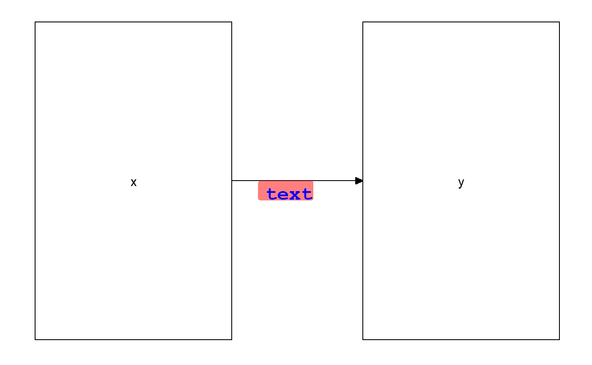
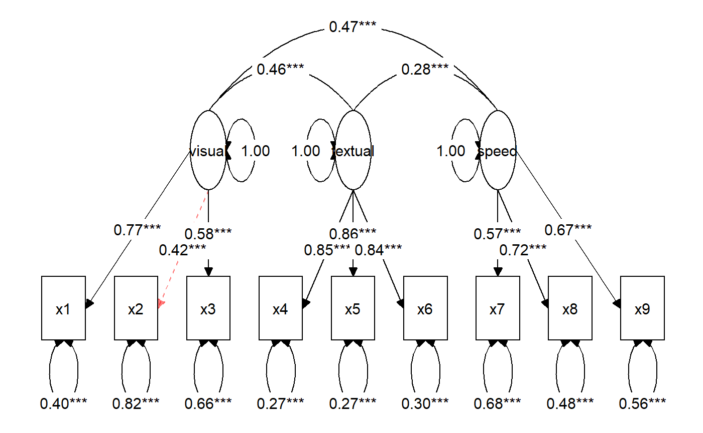
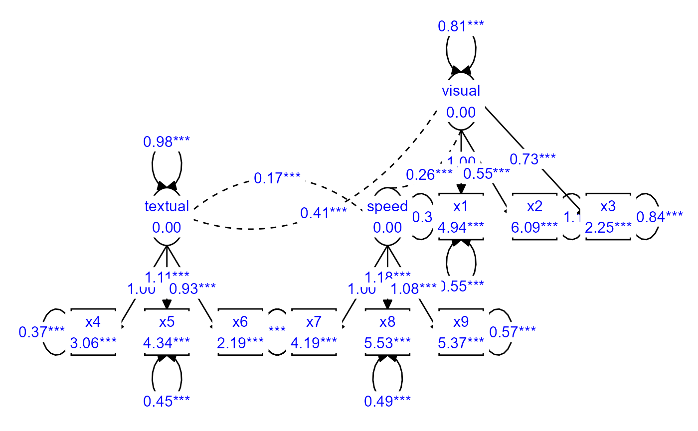
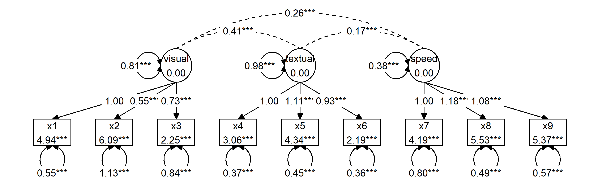
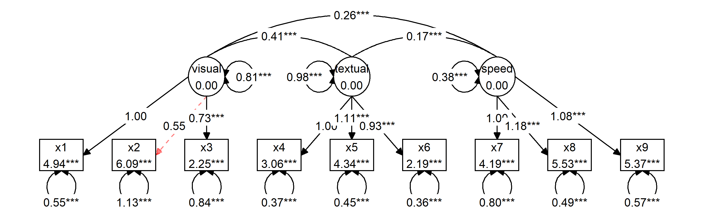

Plotting graphs for structural equation models
Source:vignettes/Plotting_graphs.Rmd
Plotting_graphs.RmdtidySEM offers a user-friendly, tidy workflow for plotting graphs for SEM models. The workflow is largely programmatic, meaning that graphs are created mostly automatically from the output of an analysis. At the same time, all elements of the graph are stored as data.frames, which allows swift and easy customization of graphics, and artistic freedom. Some existing graphing packages automatically create a layout, but are very difficult to customize. Particularly for complex SEM models, it may be preferable to make the layout by hand, including only nodes one wishes to plot, and reporting the rest in a comprehensive table of coefficients (e.g., one obtained through table_results().
For users wholly unfamiliar with SEM graphs, I recommend reading the vignette about SEM graphing conventions first.
Let’s load the required packages:
The tidySEM workflow
The workflow underlying graphing in tidySEM is as follows:
- Run an analysis, e.g., using
lavaan::sem()orMplusAutomation::mplusModeler(), passing the output to an object, e.g.,fit - Plot the graph using the function
graph(fit), or customize the graph further by following the optional steps below. -
Optionally Examine what nodes and edges can be extracted from the fit model object, by running
get_nodes(fit)andget_edges(fit) -
Optionally Specify a layout for the graph using
get_layout() -
Optionally, prepare graph data before plotting, by running
prepare_graph(fit, layout). Store the resulting graph data in an object, e.g.,graph_data -
Optionally, access the nodes and edges in
graph_datausingnodes(graph_data)andedges(graph_data) -
Optionally, modify the nodes and edges in
graph_datausingnodes(graph_data) <- ...andedges(graph_data) <- ...
This workflow ensures a high degree of transparency and customizability. Objects returned by all functions are “tidy” data, i.e., tabular data.frames, and can be modified using the familiar suite of functions in the ‘tidyverse’.
Example: Graphing a CFA
Step 1: Run an analysis
As an example, let’s make a graph for a classic lavaan tutorial example for CFA. First, we conduct the SEM analysis:
Step 2: Plot the graph
At this point, we could simply plot the graph:
graph_sem(model = fit)
This uses a default layout, provided by the igraph package. However, the node placement is not very aesthetically pleasing. One of the areas where tidySEM really excels is customization. Because every aspect of the graph is represented as tidy data (basically, a spreadsheet), it is easy to move nodes around and create a custom layout.
Optional step 3: Customizing the layout
In tidySEM, the layout is specified as a matrix (grid) with node names and empty spaces (NA or ""). There are essentially three ways to specify the layout:
- Automatically, from the fit model
- Manually in R
- In a spreadsheet program
Automatically generate layout for a model
The example above used an automatically generated layout for the fit model (lavaan or Mplus). If you open the help file for the function by running ?graph_sem, you can see that the default argument is layout = get_layout(x = model), where model refers to the model argument of the same function.
The get_layout() function automatically generates a layout for a fit model object. To get this layout as a matrix, you can run:
get_layout(fit)
#> [,1] [,2] [,3] [,4] [,5] [,6] [,7] [,8]
#> [1,] NA NA NA NA NA "visual" NA NA
#> [2,] NA "textual" NA NA "speed" "x1" "x2" "x3"
#> [3,] "x4" "x5" "x6" "x7" "x8" "x9" NA NA
#> attr(,"class")
#> [1] "layout_matrix" "matrix" "array"The get_layout() function relies on igraph::layout_as_tree() to place the nodes. Other layout functions from the igraph package can be used by specifying the layout_algorithm = ... argument:
get_layout(fit, layout_algorithm = "layout_in_circle")
#> [,1] [,2] [,3] [,4] [,5]
#> [1,] NA "x2" NA NA NA
#> [2,] NA "x3" "x1" "speed" "textual"
#> [3,] NA "x4" NA "visual" NA
#> [4,] "x5" "x6" "x7" "x9" NA
#> [5,] NA NA NA "x8" NA
#> attr(,"class")
#> [1] "layout_matrix" "matrix" "array"
get_layout(fit, layout_algorithm = "layout_on_grid")
#> [,1] [,2] [,3] [,4]
#> [1,] "x6" "x7" "x8" "x9"
#> [2,] "x2" "x3" "x4" "x5"
#> [3,] "visual" "textual" "speed" "x1"
#> attr(,"class")
#> [1] "layout_matrix" "matrix" "array"Specifying layout manually in R
Manually specifying the layout can be done by providing node names and empty spaces (NA or ""), and the number of rows of the desired layout matrix. For example:
get_layout("c", NA, "d",
NA, "e", NA, rows = 2)
#> [,1] [,2] [,3]
#> [1,] "c" NA "d"
#> [2,] NA "e" NA
#> attr(,"class")
#> [1] "layout_matrix" "matrix" "array"Of course, it is also possible to simply define a matrix using matrix().
Specifying layout in a spreadsheet program
Specifying the layout in a spreadsheet program is very user-friendly, because one can visually position the nodes, e.g.:

To obtain the layout matrix, one can save the spreadsheet as .csv file and load it in R like this:
read.csv("example.csv")Alternatively, one can select the layout as in the image above, copy it to the clipboard, and then read it into R from the clipboard. This works differently on Windows and Mac.
On Windows, run:
read.table("clipboard", sep = "\t")On Mac, run:
read.table(pipe("pbpaste"), sep="\t")#> V1 V2 V3
#> 1 x1 x2 x3
#> 2 visualExamples of user-defined layout
We can specify a simple layout for two hypothetical nodes x and y is generated as follows:
get_layout("x", "y", rows = 1)
#> [,1] [,2]
#> [1,] "x" "y"
#> attr(,"class")
#> [1] "layout_matrix" "matrix" "array"For a mediation model, one might specify a layout like this:
get_layout("", "m", "",
"x", "", "y", rows = 2)
#> [,1] [,2] [,3]
#> [1,] "" "m" ""
#> [2,] "x" "" "y"
#> attr(,"class")
#> [1] "layout_matrix" "matrix" "array"For a three-item CFA model, one might specify:
get_layout("", "F", "",
"y1", "y2", "y3", rows = 2)
#> [,1] [,2] [,3]
#> [1,] "" "F" ""
#> [2,] "y1" "y2" "y3"
#> attr(,"class")
#> [1] "layout_matrix" "matrix" "array"And for the CFA model we estimated above:
lay <- get_layout("", "", "visual","","textual","","speed","", "",
"x1", "x2", "x3", "x4", "x5", "x6", "x7", "x8", "x9", rows = 2)We could plot the CFA model with this custom layout as follows:
graph_sem(fit, layout = lay)
Step 4: Customize nodes and edges
For the simple model above, it is easy to verify the names of the nodes and edges from the syntax above: The nodes consist of three latent variables (visual, textual, and speed), and nine observed variables (x1-x9). The edges are nine factor loadings - and three latent variable correlations, included by default. We can confirm which nodes are available by running get_nodes():
get_nodes(fit)
#> name shape label
#> 1 visual oval visual
#> 2 textual oval textual
#> 3 speed oval speed
#> 4 x1 rect x1
#> 5 x2 rect x2
#> 6 x3 rect x3
#> 7 x4 rect x4
#> 8 x5 rect x5
#> 9 x6 rect x6
#> 10 x7 rect x7
#> 11 x8 rect x8
#> 12 x9 rect x9And for the edges:
get_edges(fit)
#> from to arrow label connect_from connect_to curvature lhs op
#> 1 visual x1 last 1.00 NA NA NA visual =~
#> 2 visual x2 last 0.55*** NA NA NA visual =~
#> 3 visual x3 last 0.73*** NA NA NA visual =~
#> 4 textual x4 last 1.00 NA NA NA textual =~
#> 5 textual x5 last 1.11*** NA NA NA textual =~
#> 6 textual x6 last 0.93*** NA NA NA textual =~
#> 7 speed x7 last 1.00 NA NA NA speed =~
#> 8 speed x8 last 1.18*** NA NA NA speed =~
#> 9 speed x9 last 1.08*** NA NA NA speed =~
#> 10 x1 x1 both 0.55*** NA NA NA x1 ~~
#> 11 x2 x2 both 1.13*** NA NA NA x2 ~~
#> 12 x3 x3 both 0.84*** NA NA NA x3 ~~
#> 13 x4 x4 both 0.37*** NA NA NA x4 ~~
#> 14 x5 x5 both 0.45*** NA NA NA x5 ~~
#> 15 x6 x6 both 0.36*** NA NA NA x6 ~~
#> 16 x7 x7 both 0.80*** NA NA NA x7 ~~
#> 17 x8 x8 both 0.49*** NA NA NA x8 ~~
#> 18 x9 x9 both 0.57*** NA NA NA x9 ~~
#> 19 visual visual both 0.81*** NA NA NA visual ~~
#> 20 textual textual both 0.98*** NA NA NA textual ~~
#> 21 speed speed both 0.38*** NA NA NA speed ~~
#> 22 visual textual none 0.41*** NA NA 60 visual ~~
#> 23 visual speed none 0.26*** NA NA 60 visual ~~
#> 24 textual speed none 0.17*** NA NA 60 textual ~~
#> rhs est se pval confint est_sig est_std se_std pval_std
#> 1 x1 1.00 0.00 <NA> [1.00, 1.00] 1.00 0.77 0.05 0.00
#> 2 x2 0.55 0.10 0.00 [0.36, 0.75] 0.55*** 0.42 0.06 0.00
#> 3 x3 0.73 0.11 0.00 [0.52, 0.94] 0.73*** 0.58 0.06 0.00
#> 4 x4 1.00 0.00 <NA> [1.00, 1.00] 1.00 0.85 0.02 0.00
#> 5 x5 1.11 0.07 0.00 [0.98, 1.24] 1.11*** 0.86 0.02 0.00
#> 6 x6 0.93 0.06 0.00 [0.82, 1.03] 0.93*** 0.84 0.02 0.00
#> 7 x7 1.00 0.00 <NA> [1.00, 1.00] 1.00 0.57 0.05 0.00
#> 8 x8 1.18 0.16 0.00 [0.86, 1.50] 1.18*** 0.72 0.05 0.00
#> 9 x9 1.08 0.15 0.00 [0.79, 1.38] 1.08*** 0.67 0.05 0.00
#> 10 x1 0.55 0.11 0.00 [0.33, 0.77] 0.55*** 0.40 0.08 0.00
#> 11 x2 1.13 0.10 0.00 [0.93, 1.33] 1.13*** 0.82 0.05 0.00
#> 12 x3 0.84 0.09 0.00 [0.67, 1.02] 0.84*** 0.66 0.06 0.00
#> 13 x4 0.37 0.05 0.00 [0.28, 0.46] 0.37*** 0.27 0.04 0.00
#> 14 x5 0.45 0.06 0.00 [0.33, 0.56] 0.45*** 0.27 0.04 0.00
#> 15 x6 0.36 0.04 0.00 [0.27, 0.44] 0.36*** 0.30 0.04 0.00
#> 16 x7 0.80 0.08 0.00 [0.64, 0.96] 0.80*** 0.68 0.06 0.00
#> 17 x8 0.49 0.07 0.00 [0.34, 0.63] 0.49*** 0.48 0.07 0.00
#> 18 x9 0.57 0.07 0.00 [0.43, 0.70] 0.57*** 0.56 0.07 0.00
#> 19 visual 0.81 0.15 0.00 [0.52, 1.09] 0.81*** 1.00 0.00 <NA>
#> 20 textual 0.98 0.11 0.00 [0.76, 1.20] 0.98*** 1.00 0.00 <NA>
#> 21 speed 0.38 0.09 0.00 [0.21, 0.55] 0.38*** 1.00 0.00 <NA>
#> 22 textual 0.41 0.07 0.00 [0.26, 0.55] 0.41*** 0.46 0.06 0.00
#> 23 speed 0.26 0.06 0.00 [0.15, 0.37] 0.26*** 0.47 0.07 0.00
#> 24 speed 0.17 0.05 0.00 [0.08, 0.27] 0.17*** 0.28 0.07 0.00
#> confint_std est_sig_std label_results show
#> 1 [0.66, 0.88] 0.77*** visual.BY.x1 TRUE
#> 2 [0.31, 0.54] 0.42*** visual.BY.x2 TRUE
#> 3 [0.47, 0.69] 0.58*** visual.BY.x3 TRUE
#> 4 [0.81, 0.90] 0.85*** textual.BY.x4 TRUE
#> 5 [0.81, 0.90] 0.86*** textual.BY.x5 TRUE
#> 6 [0.79, 0.88] 0.84*** textual.BY.x6 TRUE
#> 7 [0.47, 0.67] 0.57*** speed.BY.x7 TRUE
#> 8 [0.62, 0.82] 0.72*** speed.BY.x8 TRUE
#> 9 [0.56, 0.77] 0.67*** speed.BY.x9 TRUE
#> 10 [0.24, 0.57] 0.40*** Variances.x1 TRUE
#> 11 [0.72, 0.92] 0.82*** Variances.x2 TRUE
#> 12 [0.54, 0.79] 0.66*** Variances.x3 TRUE
#> 13 [0.20, 0.35] 0.27*** Variances.x4 TRUE
#> 14 [0.19, 0.34] 0.27*** Variances.x5 TRUE
#> 15 [0.22, 0.37] 0.30*** Variances.x6 TRUE
#> 16 [0.56, 0.79] 0.68*** Variances.x7 TRUE
#> 17 [0.33, 0.62] 0.48*** Variances.x8 TRUE
#> 18 [0.42, 0.69] 0.56*** Variances.x9 TRUE
#> 19 [1.00, 1.00] 1.00 Variances.visual TRUE
#> 20 [1.00, 1.00] 1.00 Variances.textual TRUE
#> 21 [1.00, 1.00] 1.00 Variances.speed TRUE
#> 22 [0.33, 0.58] 0.46*** visual.WITH.textual TRUE
#> 23 [0.33, 0.61] 0.47*** visual.WITH.speed TRUE
#> 24 [0.15, 0.42] 0.28*** textual.WITH.speed TRUENote that only the first few columns are used for plotting (specifically, from, to, arrow, label, connect_from, connect_to, and curvature). The remaining columns correspond to the output of table_results(fit). These auxiliary columns can be used to conditionally customize the graph (e.g., changing the color or linetype for significant paths only).
Customizing node and edge labels
The get_nodes() and get_edges() functions both call table_results() on the fit model object to get information about the nodes and edges. Both functions have a label argument which can either be a character string referencing a column of the output of table_results(), or an expression that is evaluated in the context of that output.
This allows you to customize node and edge labels. For example, maybe you want to combine the parameter estimate and its confidence interval into an edge label:
get_edges(fit, label = paste(est, confint))
#> from to arrow label connect_from connect_to curvature
#> 1 visual x1 last 1.00 [1.00, 1.00] NA NA NA
#> 2 visual x2 last 0.55 [0.36, 0.75] NA NA NA
#> 3 visual x3 last 0.73 [0.52, 0.94] NA NA NA
#> 4 textual x4 last 1.00 [1.00, 1.00] NA NA NA
#> 5 textual x5 last 1.11 [0.98, 1.24] NA NA NA
#> 6 textual x6 last 0.93 [0.82, 1.03] NA NA NA
#> 7 speed x7 last 1.00 [1.00, 1.00] NA NA NA
#> 8 speed x8 last 1.18 [0.86, 1.50] NA NA NA
#> 9 speed x9 last 1.08 [0.79, 1.38] NA NA NA
#> 10 x1 x1 both 0.55 [0.33, 0.77] NA NA NA
#> 11 x2 x2 both 1.13 [0.93, 1.33] NA NA NA
#> 12 x3 x3 both 0.84 [0.67, 1.02] NA NA NA
#> 13 x4 x4 both 0.37 [0.28, 0.46] NA NA NA
#> 14 x5 x5 both 0.45 [0.33, 0.56] NA NA NA
#> 15 x6 x6 both 0.36 [0.27, 0.44] NA NA NA
#> 16 x7 x7 both 0.80 [0.64, 0.96] NA NA NA
#> 17 x8 x8 both 0.49 [0.34, 0.63] NA NA NA
#> 18 x9 x9 both 0.57 [0.43, 0.70] NA NA NA
#> 19 visual visual both 0.81 [0.52, 1.09] NA NA NA
#> 20 textual textual both 0.98 [0.76, 1.20] NA NA NA
#> 21 speed speed both 0.38 [0.21, 0.55] NA NA NA
#> 22 visual textual none 0.41 [0.26, 0.55] NA NA 60
#> 23 visual speed none 0.26 [0.15, 0.37] NA NA 60
#> 24 textual speed none 0.17 [0.08, 0.27] NA NA 60
#> lhs op rhs est se pval confint est_sig est_std se_std
#> 1 visual =~ x1 1.00 0.00 <NA> [1.00, 1.00] 1.00 0.77 0.05
#> 2 visual =~ x2 0.55 0.10 0.00 [0.36, 0.75] 0.55*** 0.42 0.06
#> 3 visual =~ x3 0.73 0.11 0.00 [0.52, 0.94] 0.73*** 0.58 0.06
#> 4 textual =~ x4 1.00 0.00 <NA> [1.00, 1.00] 1.00 0.85 0.02
#> 5 textual =~ x5 1.11 0.07 0.00 [0.98, 1.24] 1.11*** 0.86 0.02
#> 6 textual =~ x6 0.93 0.06 0.00 [0.82, 1.03] 0.93*** 0.84 0.02
#> 7 speed =~ x7 1.00 0.00 <NA> [1.00, 1.00] 1.00 0.57 0.05
#> 8 speed =~ x8 1.18 0.16 0.00 [0.86, 1.50] 1.18*** 0.72 0.05
#> 9 speed =~ x9 1.08 0.15 0.00 [0.79, 1.38] 1.08*** 0.67 0.05
#> 10 x1 ~~ x1 0.55 0.11 0.00 [0.33, 0.77] 0.55*** 0.40 0.08
#> 11 x2 ~~ x2 1.13 0.10 0.00 [0.93, 1.33] 1.13*** 0.82 0.05
#> 12 x3 ~~ x3 0.84 0.09 0.00 [0.67, 1.02] 0.84*** 0.66 0.06
#> 13 x4 ~~ x4 0.37 0.05 0.00 [0.28, 0.46] 0.37*** 0.27 0.04
#> 14 x5 ~~ x5 0.45 0.06 0.00 [0.33, 0.56] 0.45*** 0.27 0.04
#> 15 x6 ~~ x6 0.36 0.04 0.00 [0.27, 0.44] 0.36*** 0.30 0.04
#> 16 x7 ~~ x7 0.80 0.08 0.00 [0.64, 0.96] 0.80*** 0.68 0.06
#> 17 x8 ~~ x8 0.49 0.07 0.00 [0.34, 0.63] 0.49*** 0.48 0.07
#> 18 x9 ~~ x9 0.57 0.07 0.00 [0.43, 0.70] 0.57*** 0.56 0.07
#> 19 visual ~~ visual 0.81 0.15 0.00 [0.52, 1.09] 0.81*** 1.00 0.00
#> 20 textual ~~ textual 0.98 0.11 0.00 [0.76, 1.20] 0.98*** 1.00 0.00
#> 21 speed ~~ speed 0.38 0.09 0.00 [0.21, 0.55] 0.38*** 1.00 0.00
#> 22 visual ~~ textual 0.41 0.07 0.00 [0.26, 0.55] 0.41*** 0.46 0.06
#> 23 visual ~~ speed 0.26 0.06 0.00 [0.15, 0.37] 0.26*** 0.47 0.07
#> 24 textual ~~ speed 0.17 0.05 0.00 [0.08, 0.27] 0.17*** 0.28 0.07
#> pval_std confint_std est_sig_std label_results show
#> 1 0.00 [0.66, 0.88] 0.77*** visual.BY.x1 TRUE
#> 2 0.00 [0.31, 0.54] 0.42*** visual.BY.x2 TRUE
#> 3 0.00 [0.47, 0.69] 0.58*** visual.BY.x3 TRUE
#> 4 0.00 [0.81, 0.90] 0.85*** textual.BY.x4 TRUE
#> 5 0.00 [0.81, 0.90] 0.86*** textual.BY.x5 TRUE
#> 6 0.00 [0.79, 0.88] 0.84*** textual.BY.x6 TRUE
#> 7 0.00 [0.47, 0.67] 0.57*** speed.BY.x7 TRUE
#> 8 0.00 [0.62, 0.82] 0.72*** speed.BY.x8 TRUE
#> 9 0.00 [0.56, 0.77] 0.67*** speed.BY.x9 TRUE
#> 10 0.00 [0.24, 0.57] 0.40*** Variances.x1 TRUE
#> 11 0.00 [0.72, 0.92] 0.82*** Variances.x2 TRUE
#> 12 0.00 [0.54, 0.79] 0.66*** Variances.x3 TRUE
#> 13 0.00 [0.20, 0.35] 0.27*** Variances.x4 TRUE
#> 14 0.00 [0.19, 0.34] 0.27*** Variances.x5 TRUE
#> 15 0.00 [0.22, 0.37] 0.30*** Variances.x6 TRUE
#> 16 0.00 [0.56, 0.79] 0.68*** Variances.x7 TRUE
#> 17 0.00 [0.33, 0.62] 0.48*** Variances.x8 TRUE
#> 18 0.00 [0.42, 0.69] 0.56*** Variances.x9 TRUE
#> 19 <NA> [1.00, 1.00] 1.00 Variances.visual TRUE
#> 20 <NA> [1.00, 1.00] 1.00 Variances.textual TRUE
#> 21 <NA> [1.00, 1.00] 1.00 Variances.speed TRUE
#> 22 0.00 [0.33, 0.58] 0.46*** visual.WITH.textual TRUE
#> 23 0.00 [0.33, 0.61] 0.47*** visual.WITH.speed TRUE
#> 24 0.00 [0.15, 0.42] 0.28*** textual.WITH.speed TRUEWe can do the same for the nodes, but note that in the previous lavaan model, the mean structure was not part of the model. As the nodes represent means and intercepts, table_results() will not retrieve any parameter estimates for the nodes when the mean structure is not part of the model. In absence of additional information about the nodes, get_nodes() will use the node name as a label.To remove all node labels, specify label = NULL.
We can re-run the model with a mean structure to get more information about the nodes:
fit <- cfa(HS.model, data=HolzingerSwineford1939, meanstructure = TRUE)Running get_nodes() now uses the estimated means in the label:
get_nodes(fit)
#> name shape label lhs op rhs est se pval confint
#> 1 speed oval speed\n0.00 speed ~1 0.00 0.00 <NA> [0.00, 0.00]
#> 2 textual oval textual\n0.00 textual ~1 0.00 0.00 <NA> [0.00, 0.00]
#> 3 visual oval visual\n0.00 visual ~1 0.00 0.00 <NA> [0.00, 0.00]
#> 4 x1 rect x1\n4.94*** x1 ~1 4.94 0.07 0.00 [4.80, 5.07]
#> 5 x2 rect x2\n6.09*** x2 ~1 6.09 0.07 0.00 [5.96, 6.22]
#> 6 x3 rect x3\n2.25*** x3 ~1 2.25 0.07 0.00 [2.12, 2.38]
#> 7 x4 rect x4\n3.06*** x4 ~1 3.06 0.07 0.00 [2.93, 3.19]
#> 8 x5 rect x5\n4.34*** x5 ~1 4.34 0.07 0.00 [4.19, 4.49]
#> 9 x6 rect x6\n2.19*** x6 ~1 2.19 0.06 0.00 [2.06, 2.31]
#> 10 x7 rect x7\n4.19*** x7 ~1 4.19 0.06 0.00 [4.06, 4.31]
#> 11 x8 rect x8\n5.53*** x8 ~1 5.53 0.06 0.00 [5.41, 5.64]
#> 12 x9 rect x9\n5.37*** x9 ~1 5.37 0.06 0.00 [5.26, 5.49]
#> est_sig est_std se_std pval_std confint_std est_sig_std label_results
#> 1 0.00 0.00 0.00 <NA> [0.00, 0.00] 0.00 Means.speed
#> 2 0.00 0.00 0.00 <NA> [0.00, 0.00] 0.00 Means.textual
#> 3 0.00 0.00 0.00 <NA> [0.00, 0.00] 0.00 Means.visual
#> 4 4.94*** 4.23 0.18 0.00 [3.88, 4.59] 4.23*** Means.x1
#> 5 6.09*** 5.18 0.22 0.00 [4.75, 5.61] 5.18*** Means.x2
#> 6 2.25*** 1.99 0.10 0.00 [1.80, 2.19] 1.99*** Means.x3
#> 7 3.06*** 2.63 0.12 0.00 [2.39, 2.87] 2.63*** Means.x4
#> 8 4.34*** 3.37 0.15 0.00 [3.08, 3.66] 3.37*** Means.x5
#> 9 2.19*** 2.00 0.10 0.00 [1.80, 2.19] 2.00*** Means.x6
#> 10 4.19*** 3.85 0.17 0.00 [3.52, 4.18] 3.85*** Means.x7
#> 11 5.53*** 5.47 0.23 0.00 [5.02, 5.92] 5.47*** Means.x8
#> 12 5.37*** 5.33 0.22 0.00 [4.89, 5.78] 5.33*** Means.x9These labels can be further customized as shown below:
get_nodes(fit, label = paste0(name, "\n", est, " ", confint))
#> name shape label lhs op rhs est se pval
#> 1 speed oval speed\n0.00 [0.00, 0.00] speed ~1 0.00 0.00 <NA>
#> 2 textual oval textual\n0.00 [0.00, 0.00] textual ~1 0.00 0.00 <NA>
#> 3 visual oval visual\n0.00 [0.00, 0.00] visual ~1 0.00 0.00 <NA>
#> 4 x1 rect x1\n4.94 [4.80, 5.07] x1 ~1 4.94 0.07 0.00
#> 5 x2 rect x2\n6.09 [5.96, 6.22] x2 ~1 6.09 0.07 0.00
#> 6 x3 rect x3\n2.25 [2.12, 2.38] x3 ~1 2.25 0.07 0.00
#> 7 x4 rect x4\n3.06 [2.93, 3.19] x4 ~1 3.06 0.07 0.00
#> 8 x5 rect x5\n4.34 [4.19, 4.49] x5 ~1 4.34 0.07 0.00
#> 9 x6 rect x6\n2.19 [2.06, 2.31] x6 ~1 2.19 0.06 0.00
#> 10 x7 rect x7\n4.19 [4.06, 4.31] x7 ~1 4.19 0.06 0.00
#> 11 x8 rect x8\n5.53 [5.41, 5.64] x8 ~1 5.53 0.06 0.00
#> 12 x9 rect x9\n5.37 [5.26, 5.49] x9 ~1 5.37 0.06 0.00
#> confint est_sig est_std se_std pval_std confint_std est_sig_std
#> 1 [0.00, 0.00] 0.00 0.00 0.00 <NA> [0.00, 0.00] 0.00
#> 2 [0.00, 0.00] 0.00 0.00 0.00 <NA> [0.00, 0.00] 0.00
#> 3 [0.00, 0.00] 0.00 0.00 0.00 <NA> [0.00, 0.00] 0.00
#> 4 [4.80, 5.07] 4.94*** 4.23 0.18 0.00 [3.88, 4.59] 4.23***
#> 5 [5.96, 6.22] 6.09*** 5.18 0.22 0.00 [4.75, 5.61] 5.18***
#> 6 [2.12, 2.38] 2.25*** 1.99 0.10 0.00 [1.80, 2.19] 1.99***
#> 7 [2.93, 3.19] 3.06*** 2.63 0.12 0.00 [2.39, 2.87] 2.63***
#> 8 [4.19, 4.49] 4.34*** 3.37 0.15 0.00 [3.08, 3.66] 3.37***
#> 9 [2.06, 2.31] 2.19*** 2.00 0.10 0.00 [1.80, 2.19] 2.00***
#> 10 [4.06, 4.31] 4.19*** 3.85 0.17 0.00 [3.52, 4.18] 3.85***
#> 11 [5.41, 5.64] 5.53*** 5.47 0.23 0.00 [5.02, 5.92] 5.47***
#> 12 [5.26, 5.49] 5.37*** 5.33 0.22 0.00 [4.89, 5.78] 5.33***
#> label_results
#> 1 Means.speed
#> 2 Means.textual
#> 3 Means.visual
#> 4 Means.x1
#> 5 Means.x2
#> 6 Means.x3
#> 7 Means.x4
#> 8 Means.x5
#> 9 Means.x6
#> 10 Means.x7
#> 11 Means.x8
#> 12 Means.x9
Customize labels of a sem_graph
Instead of customizing the node and edge labels in the call to get_nodes() and get_edges(), it is also possible to use the auxiliary columns in the nodes and edges elements of a sem_graph object to customize the labels (or other properties of the plot) later. First, let’s generate a sem_graph object and examine the edges element:
p <- prepare_graph(fit)
edges(p)
#> from to arrow label connect_from connect_to curvature lhs op
#> 1 visual x1 last 1.00 bottom top NA visual =~
#> 2 visual x2 last 0.55*** bottom left NA visual =~
#> 3 visual x3 last 0.73*** right left NA visual =~
#> 4 textual x4 last 1.00 bottom right NA textual =~
#> 5 textual x5 last 1.11*** bottom top NA textual =~
#> 6 textual x6 last 0.93*** bottom left NA textual =~
#> 7 speed x7 last 1.00 bottom right NA speed =~
#> 8 speed x8 last 1.18*** bottom top NA speed =~
#> 9 speed x9 last 1.08*** bottom left NA speed =~
#> 10 x1 x1 both 0.55*** bottom bottom NA x1 ~~
#> 11 x2 x2 both 1.13*** bottom bottom NA x2 ~~
#> 12 x3 x3 both 0.84*** bottom bottom NA x3 ~~
#> 13 x4 x4 both 0.37*** bottom bottom NA x4 ~~
#> 14 x5 x5 both 0.45*** bottom bottom NA x5 ~~
#> 15 x6 x6 both 0.36*** bottom bottom NA x6 ~~
#> 16 x7 x7 both 0.80*** bottom bottom NA x7 ~~
#> 17 x8 x8 both 0.49*** bottom bottom NA x8 ~~
#> 18 x9 x9 both 0.57*** bottom bottom NA x9 ~~
#> 19 visual visual both 0.81*** top top NA visual ~~
#> 20 textual textual both 0.98*** left left NA textual ~~
#> 21 speed speed both 0.38*** left left NA speed ~~
#> 22 visual textual none 0.41*** left right 60 visual ~~
#> 23 visual speed none 0.26*** left top 60 visual ~~
#> 24 textual speed none 0.17*** bottom bottom 60 textual ~~
#> rhs est se pval confint est_sig est_std se_std pval_std
#> 1 x1 1.00 0.00 <NA> [1.00, 1.00] 1.00 0.77 0.05 0.00
#> 2 x2 0.55 0.10 0.00 [0.36, 0.75] 0.55*** 0.42 0.06 0.00
#> 3 x3 0.73 0.11 0.00 [0.52, 0.94] 0.73*** 0.58 0.06 0.00
#> 4 x4 1.00 0.00 <NA> [1.00, 1.00] 1.00 0.85 0.02 0.00
#> 5 x5 1.11 0.07 0.00 [0.98, 1.24] 1.11*** 0.86 0.02 0.00
#> 6 x6 0.93 0.06 0.00 [0.82, 1.03] 0.93*** 0.84 0.02 0.00
#> 7 x7 1.00 0.00 <NA> [1.00, 1.00] 1.00 0.57 0.05 0.00
#> 8 x8 1.18 0.16 0.00 [0.86, 1.50] 1.18*** 0.72 0.05 0.00
#> 9 x9 1.08 0.15 0.00 [0.79, 1.38] 1.08*** 0.67 0.05 0.00
#> 10 x1 0.55 0.11 0.00 [0.33, 0.77] 0.55*** 0.40 0.08 0.00
#> 11 x2 1.13 0.10 0.00 [0.93, 1.33] 1.13*** 0.82 0.05 0.00
#> 12 x3 0.84 0.09 0.00 [0.67, 1.02] 0.84*** 0.66 0.06 0.00
#> 13 x4 0.37 0.05 0.00 [0.28, 0.46] 0.37*** 0.27 0.04 0.00
#> 14 x5 0.45 0.06 0.00 [0.33, 0.56] 0.45*** 0.27 0.04 0.00
#> 15 x6 0.36 0.04 0.00 [0.27, 0.44] 0.36*** 0.30 0.04 0.00
#> 16 x7 0.80 0.08 0.00 [0.64, 0.96] 0.80*** 0.68 0.06 0.00
#> 17 x8 0.49 0.07 0.00 [0.34, 0.63] 0.49*** 0.48 0.07 0.00
#> 18 x9 0.57 0.07 0.00 [0.43, 0.70] 0.57*** 0.56 0.07 0.00
#> 19 visual 0.81 0.15 0.00 [0.52, 1.09] 0.81*** 1.00 0.00 <NA>
#> 20 textual 0.98 0.11 0.00 [0.76, 1.20] 0.98*** 1.00 0.00 <NA>
#> 21 speed 0.38 0.09 0.00 [0.21, 0.55] 0.38*** 1.00 0.00 <NA>
#> 22 textual 0.41 0.07 0.00 [0.26, 0.55] 0.41*** 0.46 0.06 0.00
#> 23 speed 0.26 0.06 0.00 [0.15, 0.37] 0.26*** 0.47 0.07 0.00
#> 24 speed 0.17 0.05 0.00 [0.08, 0.27] 0.17*** 0.28 0.07 0.00
#> confint_std est_sig_std label_results show
#> 1 [0.66, 0.88] 0.77*** visual.BY.x1 TRUE
#> 2 [0.31, 0.54] 0.42*** visual.BY.x2 TRUE
#> 3 [0.47, 0.69] 0.58*** visual.BY.x3 TRUE
#> 4 [0.81, 0.90] 0.85*** textual.BY.x4 TRUE
#> 5 [0.81, 0.90] 0.86*** textual.BY.x5 TRUE
#> 6 [0.79, 0.88] 0.84*** textual.BY.x6 TRUE
#> 7 [0.47, 0.67] 0.57*** speed.BY.x7 TRUE
#> 8 [0.62, 0.82] 0.72*** speed.BY.x8 TRUE
#> 9 [0.56, 0.77] 0.67*** speed.BY.x9 TRUE
#> 10 [0.24, 0.57] 0.40*** Variances.x1 TRUE
#> 11 [0.72, 0.92] 0.82*** Variances.x2 TRUE
#> 12 [0.54, 0.79] 0.66*** Variances.x3 TRUE
#> 13 [0.20, 0.35] 0.27*** Variances.x4 TRUE
#> 14 [0.19, 0.34] 0.27*** Variances.x5 TRUE
#> 15 [0.22, 0.37] 0.30*** Variances.x6 TRUE
#> 16 [0.56, 0.79] 0.68*** Variances.x7 TRUE
#> 17 [0.33, 0.62] 0.48*** Variances.x8 TRUE
#> 18 [0.42, 0.69] 0.56*** Variances.x9 TRUE
#> 19 [1.00, 1.00] 1.00 Variances.visual TRUE
#> 20 [1.00, 1.00] 1.00 Variances.textual TRUE
#> 21 [1.00, 1.00] 1.00 Variances.speed TRUE
#> 22 [0.33, 0.58] 0.46*** visual.WITH.textual TRUE
#> 23 [0.33, 0.61] 0.47*** visual.WITH.speed TRUE
#> 24 [0.15, 0.42] 0.28*** textual.WITH.speed TRUEAll of the columns in the edges element can be used to manually construct labels, using the edit_graph() function:
prepare_graph(fit) %>%
edit_graph({ label = paste(est_sig_std, "\n", confint_std) }) %>%
plot()
The same can be done for the node labels:
prepare_graph(fit) %>%
edit_graph({ label = paste(est_sig_std, "\n", confint_std) }) %>%
edit_graph({ label = paste(name, "\n", est_sig_std, "\n", confint_std) }, element = "nodes") %>%
plot()
Note that, by specifying both "nodes" and "edges"), both nodes and edges are edited - but in the preceding example, we actually want different labels for the nodes and edges (so that node labels are shown). For example, we can change the label color for both nodes and edges:
prepare_graph(fit) %>%
edit_graph({ label_color = "blue" }) %>%
plot()
The section on Visual aspects further demonstrates how to use these auxiliary columns to customize visual properties of the graph.
Optional step 5: accessing graph data before plotting
One important feature of tidySEM graphing is that the data used to compose the plot can be conveniently accessed an modified before plotting. First, use prepare_graph() to assign the plot data to an object.
graph_data <- prepare_graph(model = fit, layout = lay)Optional step 6: Access the nodes and edges
The nodes and edges can be examined using nodes(graph_data) and edges(graph_data):
nodes(graph_data)
#> name shape label x y node_xmin node_xmax node_ymin node_ymax
#> 1 speed oval speed\n0.00 14 4 13.5 14.5 3.5 4.5
#> 2 textual oval textual\n0.00 10 4 9.5 10.5 3.5 4.5
#> 3 visual oval visual\n0.00 6 4 5.5 6.5 3.5 4.5
#> 4 x1 rect x1\n4.94*** 2 2 1.4 2.6 1.6 2.4
#> 5 x2 rect x2\n6.09*** 4 2 3.4 4.6 1.6 2.4
#> 6 x3 rect x3\n2.25*** 6 2 5.4 6.6 1.6 2.4
#> 7 x4 rect x4\n3.06*** 8 2 7.4 8.6 1.6 2.4
#> 8 x5 rect x5\n4.34*** 10 2 9.4 10.6 1.6 2.4
#> 9 x6 rect x6\n2.19*** 12 2 11.4 12.6 1.6 2.4
#> 10 x7 rect x7\n4.19*** 14 2 13.4 14.6 1.6 2.4
#> 11 x8 rect x8\n5.53*** 16 2 15.4 16.6 1.6 2.4
#> 12 x9 rect x9\n5.37*** 18 2 17.4 18.6 1.6 2.4
#> lhs op rhs est se pval confint est_sig est_std se_std pval_std
#> 1 speed ~1 0.00 0.00 <NA> [0.00, 0.00] 0.00 0.00 0.00 <NA>
#> 2 textual ~1 0.00 0.00 <NA> [0.00, 0.00] 0.00 0.00 0.00 <NA>
#> 3 visual ~1 0.00 0.00 <NA> [0.00, 0.00] 0.00 0.00 0.00 <NA>
#> 4 x1 ~1 4.94 0.07 0.00 [4.80, 5.07] 4.94*** 4.23 0.18 0.00
#> 5 x2 ~1 6.09 0.07 0.00 [5.96, 6.22] 6.09*** 5.18 0.22 0.00
#> 6 x3 ~1 2.25 0.07 0.00 [2.12, 2.38] 2.25*** 1.99 0.10 0.00
#> 7 x4 ~1 3.06 0.07 0.00 [2.93, 3.19] 3.06*** 2.63 0.12 0.00
#> 8 x5 ~1 4.34 0.07 0.00 [4.19, 4.49] 4.34*** 3.37 0.15 0.00
#> 9 x6 ~1 2.19 0.06 0.00 [2.06, 2.31] 2.19*** 2.00 0.10 0.00
#> 10 x7 ~1 4.19 0.06 0.00 [4.06, 4.31] 4.19*** 3.85 0.17 0.00
#> 11 x8 ~1 5.53 0.06 0.00 [5.41, 5.64] 5.53*** 5.47 0.23 0.00
#> 12 x9 ~1 5.37 0.06 0.00 [5.26, 5.49] 5.37*** 5.33 0.22 0.00
#> confint_std est_sig_std label_results show
#> 1 [0.00, 0.00] 0.00 Means.speed TRUE
#> 2 [0.00, 0.00] 0.00 Means.textual TRUE
#> 3 [0.00, 0.00] 0.00 Means.visual TRUE
#> 4 [3.88, 4.59] 4.23*** Means.x1 TRUE
#> 5 [4.75, 5.61] 5.18*** Means.x2 TRUE
#> 6 [1.80, 2.19] 1.99*** Means.x3 TRUE
#> 7 [2.39, 2.87] 2.63*** Means.x4 TRUE
#> 8 [3.08, 3.66] 3.37*** Means.x5 TRUE
#> 9 [1.80, 2.19] 2.00*** Means.x6 TRUE
#> 10 [3.52, 4.18] 3.85*** Means.x7 TRUE
#> 11 [5.02, 5.92] 5.47*** Means.x8 TRUE
#> 12 [4.89, 5.78] 5.33*** Means.x9 TRUE
edges(graph_data)
#> from to arrow label connect_from connect_to curvature lhs op
#> 1 visual x1 last 1.00 left right NA visual =~
#> 2 visual x2 last 0.55*** bottom right NA visual =~
#> 3 visual x3 last 0.73*** bottom top NA visual =~
#> 4 textual x4 last 1.00 bottom right NA textual =~
#> 5 textual x5 last 1.11*** bottom top NA textual =~
#> 6 textual x6 last 0.93*** bottom left NA textual =~
#> 7 speed x7 last 1.00 bottom top NA speed =~
#> 8 speed x8 last 1.18*** bottom left NA speed =~
#> 9 speed x9 last 1.08*** right left NA speed =~
#> 10 x1 x1 both 0.55*** bottom bottom NA x1 ~~
#> 11 x2 x2 both 1.13*** bottom bottom NA x2 ~~
#> 12 x3 x3 both 0.84*** bottom bottom NA x3 ~~
#> 13 x4 x4 both 0.37*** bottom bottom NA x4 ~~
#> 14 x5 x5 both 0.45*** bottom bottom NA x5 ~~
#> 15 x6 x6 both 0.36*** bottom bottom NA x6 ~~
#> 16 x7 x7 both 0.80*** bottom bottom NA x7 ~~
#> 17 x8 x8 both 0.49*** bottom bottom NA x8 ~~
#> 18 x9 x9 both 0.57*** bottom bottom NA x9 ~~
#> 19 visual visual both 0.81*** right right NA visual ~~
#> 20 textual textual both 0.98*** left left NA textual ~~
#> 21 speed speed both 0.38*** left left NA speed ~~
#> 22 visual textual none 0.41*** top top 60 visual ~~
#> 23 visual speed none 0.26*** top top 60 visual ~~
#> 24 textual speed none 0.17*** top top 60 textual ~~
#> rhs est se pval confint est_sig est_std se_std pval_std
#> 1 x1 1.00 0.00 <NA> [1.00, 1.00] 1.00 0.77 0.05 0.00
#> 2 x2 0.55 0.10 0.00 [0.36, 0.75] 0.55*** 0.42 0.06 0.00
#> 3 x3 0.73 0.11 0.00 [0.52, 0.94] 0.73*** 0.58 0.06 0.00
#> 4 x4 1.00 0.00 <NA> [1.00, 1.00] 1.00 0.85 0.02 0.00
#> 5 x5 1.11 0.07 0.00 [0.98, 1.24] 1.11*** 0.86 0.02 0.00
#> 6 x6 0.93 0.06 0.00 [0.82, 1.03] 0.93*** 0.84 0.02 0.00
#> 7 x7 1.00 0.00 <NA> [1.00, 1.00] 1.00 0.57 0.05 0.00
#> 8 x8 1.18 0.16 0.00 [0.86, 1.50] 1.18*** 0.72 0.05 0.00
#> 9 x9 1.08 0.15 0.00 [0.79, 1.38] 1.08*** 0.67 0.05 0.00
#> 10 x1 0.55 0.11 0.00 [0.33, 0.77] 0.55*** 0.40 0.08 0.00
#> 11 x2 1.13 0.10 0.00 [0.93, 1.33] 1.13*** 0.82 0.05 0.00
#> 12 x3 0.84 0.09 0.00 [0.67, 1.02] 0.84*** 0.66 0.06 0.00
#> 13 x4 0.37 0.05 0.00 [0.28, 0.46] 0.37*** 0.27 0.04 0.00
#> 14 x5 0.45 0.06 0.00 [0.33, 0.56] 0.45*** 0.27 0.04 0.00
#> 15 x6 0.36 0.04 0.00 [0.27, 0.44] 0.36*** 0.30 0.04 0.00
#> 16 x7 0.80 0.08 0.00 [0.64, 0.96] 0.80*** 0.68 0.06 0.00
#> 17 x8 0.49 0.07 0.00 [0.34, 0.63] 0.49*** 0.48 0.07 0.00
#> 18 x9 0.57 0.07 0.00 [0.43, 0.70] 0.57*** 0.56 0.07 0.00
#> 19 visual 0.81 0.15 0.00 [0.52, 1.09] 0.81*** 1.00 0.00 <NA>
#> 20 textual 0.98 0.11 0.00 [0.76, 1.20] 0.98*** 1.00 0.00 <NA>
#> 21 speed 0.38 0.09 0.00 [0.21, 0.55] 0.38*** 1.00 0.00 <NA>
#> 22 textual 0.41 0.07 0.00 [0.26, 0.55] 0.41*** 0.46 0.06 0.00
#> 23 speed 0.26 0.06 0.00 [0.15, 0.37] 0.26*** 0.47 0.07 0.00
#> 24 speed 0.17 0.05 0.00 [0.08, 0.27] 0.17*** 0.28 0.07 0.00
#> confint_std est_sig_std label_results show
#> 1 [0.66, 0.88] 0.77*** visual.BY.x1 TRUE
#> 2 [0.31, 0.54] 0.42*** visual.BY.x2 TRUE
#> 3 [0.47, 0.69] 0.58*** visual.BY.x3 TRUE
#> 4 [0.81, 0.90] 0.85*** textual.BY.x4 TRUE
#> 5 [0.81, 0.90] 0.86*** textual.BY.x5 TRUE
#> 6 [0.79, 0.88] 0.84*** textual.BY.x6 TRUE
#> 7 [0.47, 0.67] 0.57*** speed.BY.x7 TRUE
#> 8 [0.62, 0.82] 0.72*** speed.BY.x8 TRUE
#> 9 [0.56, 0.77] 0.67*** speed.BY.x9 TRUE
#> 10 [0.24, 0.57] 0.40*** Variances.x1 TRUE
#> 11 [0.72, 0.92] 0.82*** Variances.x2 TRUE
#> 12 [0.54, 0.79] 0.66*** Variances.x3 TRUE
#> 13 [0.20, 0.35] 0.27*** Variances.x4 TRUE
#> 14 [0.19, 0.34] 0.27*** Variances.x5 TRUE
#> 15 [0.22, 0.37] 0.30*** Variances.x6 TRUE
#> 16 [0.56, 0.79] 0.68*** Variances.x7 TRUE
#> 17 [0.33, 0.62] 0.48*** Variances.x8 TRUE
#> 18 [0.42, 0.69] 0.56*** Variances.x9 TRUE
#> 19 [1.00, 1.00] 1.00 Variances.visual TRUE
#> 20 [1.00, 1.00] 1.00 Variances.textual TRUE
#> 21 [1.00, 1.00] 1.00 Variances.speed TRUE
#> 22 [0.33, 0.58] 0.46*** visual.WITH.textual TRUE
#> 23 [0.33, 0.61] 0.47*** visual.WITH.speed TRUE
#> 24 [0.15, 0.42] 0.28*** textual.WITH.speed TRUEOptional step 7: Modify the nodes and edges
At this stage, we may want to improve the basic plot slightly. The functions nodes(graph_data) <- ... and edges(graph_data) <- ... can be used to modify the nodes and edges. These functions pair well with the general ‘tidyverse’ workflow. For example, we might want to print node labels for latent variables in Title Case instead of just using the variable names:
library(dplyr)
library(stringr)
nodes(graph_data) <- nodes(graph_data) %>%
mutate(label = str_to_title(label))Now, for the edges, we see that the default edging algorithm has connected some nodes side-to-side (based on the smallest possible Euclidian distance). However, in this simple graph, it makes more sense to connect all nodes top-to-bottom - except for the latent variable covariances. We can use the same conditional replacement for the edges:
Plot the customized graph
We can plot a customized graph using plot(graph_data); a generic plot method for sem_graph objects:
plot(graph_data)
Connecting nodes
The functions graph_sem() and prepare_graph() will always try to connect nodes in an aesthetically pleasing way. To do this, they connect nodes by one of the four sides (top, bottom, left and right), based on the shortest distance between two nodes. Alternatively, users can specify a value to the angle parameter. This parameter connects nodes top-to-bottom when they are within angle degrees above and below each other. Remaining nodes are connected side-to-side. Thus, by increasing angle to a larger number (up to 180 degrees), we can also ensure that all nodes are connected top to bottom:
graph_sem(model = fit, layout = lay, angle = 170)
Visual aspects
The visual aspects of graphs created using graph_sem() and prepare_graph() can be easily customized (see ?graph_sem()). These functions construct a graph based on a data.frame of nodes, and a data.frame of edges. The visual aspects can be customized by adding extra columns to those data.frames.
Visual aspects of edges
Edges have the following aesthetics (see ?geom_path()):
-
linetype: The type of line, e.g., continuous (linetype = 1or dashedlinetype = 2) -
colourorcolor: The color of the line (e.g.,colour = "red"orcolour = "blue") -
size: The size of the line (e.g.,size = 1orsize = 2) -
alpha: The transparency of the line (e.g.,alpha = 1oralpha = .2)
These aesthetics can be customized by adding columns to the edges data.frame, whose names correspond to the aesthetics. For example:
edg <- data.frame(from = "x",
to = "y",
linetype = 2,
colour = "red",
size = 2,
alpha = .5)
graph_sem(edges = edg, layout = get_layout("x", "y", rows = 1))
Visual aspects of nodes
Nodes have the following aesthetics (see ?geom_polygon()):
-
linetype: The type of line surrounding the node, e.g., continuous (linetype = 1or dashedlinetype = 2) -
colourorcolor: The color of the line surrounding the node (e.g.,colour = "red"orcolour = "blue") -
fill: The interior color of the node (e.g.,colour = "red"orcolour = "blue") -
size: The size of the line (e.g.,size = 1orsize = 2) -
alpha: The transparency of the node (e.g.,alpha = 1oralpha = .2)
These, too, can be appended as extra columns to the nodes data.frame:
edg <- data.frame(from = "x",
to = "y")
nod <- data.frame(name = c("x", "y"),
shape = c("rect", "oval"),
linetype = c(2, 2),
colour = c("blue", "blue"),
fill = c("blue", "blue"),
size = c(2, 2),
alpha = .5)
graph_sem(edges = edg, nodes = nod, layout = get_layout("x", "y", rows = 1))
These aesthetics can also be passed to the sem_graph object after preparing the data, for example, for highlighting a specific model element, such as the low factor loading for x2 on visual in the CFA example from before:
edges(graph_data) %>%
mutate(colour = "black") %>%
mutate(colour = replace(colour, from == "visual" & to == "x2", "red")) %>%
mutate(linetype = 1) %>%
mutate(linetype = replace(linetype, from == "visual" & to == "x2", 2)) %>%
mutate(alpha = 1) %>%
mutate(alpha = replace(alpha, from == "visual" & to == "x2", .5)) -> edges(graph_data)
plot(graph_data)
Visual aspects of edge labels
Like nodes and edges, edge labels can be customized. Labels have the same aesthetics as the ggplot function geom_label() (see ?geom_label). However, to disambiguate them from the edge aesthetics, all label aesthetics are prefaced by "label_":
-
label_colourorlabel_color: The color of the label text (e.g.,label_colour = "red") -
label_fill: The color of the rectangle behind the label text, ( e.g.,label_fill = "blue") -
label_size: The font size of the label (e.g.,label_size = 4) -
label_alpha: The transparency of the label (e.g.,alpha = 1oralpha = .2) -
label_family: The font family of the label text. By default, three are available:"serif","sans"and"mono" -
label_fontface: The face of the label text:"plain","bold","italic", or "bold.italic" -
label_hjust: Horizontal justification of label text; either a string ("left","center","right") or a number between 0 and 1 (left = 0, center = 0.5, right = 1) -
label_vjust: Vertical justification of label text; either a string ("top","middle","bottom") or a number between 0 and 1 (top = 1, middle = 0.5, bottom = 0) -
label_lineheight: Line height for multiline text -
label_location: Where along the edge to plot the label; a number between 0 (beginning) and 1 (end)
edg <- data.frame(from = "x",
to = "y",
label = "text",
label_colour = "blue",
label_fill = "red",
label_size = 6,
label_alpha = .5,
label_family = "mono",
label_fontface = "bold",
label_hjust = "left",
label_vjust = "top",
label_lineheight = 1.5,
label_location = .2
)
graph_sem(edges = edg, layout = get_layout("x", "y", rows = 1))
Conditionally customize visual aspects
The functions get_edges() and get_nodes() rely on table_results() to extract information about nodes and edges from SEM models. All of the columns returned by table_results() can be used to conditionally customize visual aspects of the graph. Let’s estimate a model and look at all of the columns extracted by get_edges():
#> from to arrow label connect_from connect_to curvature lhs op rhs est
#> 1 cyl mpg last -2.50*** NA NA NA mpg ~ cyl -2.50
#> 2 am mpg last 2.57* NA NA NA mpg ~ am 2.57
#> 3 mpg mpg both 8.48*** NA NA NA mpg ~~ mpg 8.48
#> 4 cyl cyl both 3.09 NA NA NA cyl ~~ cyl 3.09
#> 5 cyl am none -0.45 NA NA 60 cyl ~~ am -0.45
#> 6 am am both 0.24 NA NA NA am ~~ am 0.24
#> se pval confint est_sig est_std se_std pval_std confint_std
#> 1 0.34 0.00 [-3.17, -1.83] -2.50*** -0.74 0.08 0.00 [-0.89, -0.59]
#> 2 1.23 0.04 [0.16, 4.98] 2.57* 0.21 0.10 0.03 [0.02, 0.41]
#> 3 2.12 0.00 [4.32, 12.64] 8.48*** 0.24 0.06 0.00 [0.13, 0.36]
#> 4 0.00 <NA> [3.09, 3.09] 3.09 1.00 0.00 <NA> [1.00, 1.00]
#> 5 0.00 <NA> [-0.45, -0.45] -0.45 -0.52 0.00 <NA> [-0.52, -0.52]
#> 6 0.00 <NA> [0.24, 0.24] 0.24 1.00 0.00 <NA> [1.00, 1.00]
#> est_sig_std label_results show
#> 1 -0.74*** mpg.ON.cyl TRUE
#> 2 0.21* mpg.ON.am TRUE
#> 3 0.24*** Variances.mpg TRUE
#> 4 1.00 Variances.cyl FALSE
#> 5 -0.52 cyl.WITH.am FALSE
#> 6 1.00 Variances.am FALSEAny of these columns can be used to conditionally format the graph. For example, note that one of the regression paths is positive and the other negative. We might want to color positive edges green:
set.seed(6)
prepare_graph(fit) %>%
color_pos_edges("green") %>%
plot()
However, the variance arrow is also colored green, because it is an edge as well. This is where other conditional formatting functions come in handy. Imagine we want to color the negative regression path red, and color the variance black - and make the variance transparent as well, to reduce its visual importance:
prepare_graph(fit) %>%
color_pos_edges("green") %>%
color_neg_edges("red") %>%
color_var("black") %>%
alpha_var(.2) %>%
plot()
There are many dedicated conditional customization functions like these. They make use of the generic function if_edit(), and are documented in its help file (see ?if_edit).
The function if_edit() takes an expression and a condition as arguments. This makes custom conditional formatting possible. For example, imagine that we want to color every graph element with the number “4” in the column est blue, you could use:
prepare_graph(fit) %>%
# Add color column to the graph elements
edit_graph({ color = "black" }) %>%
# Conditionally change color to blue when the column 'est' contains the number 4
if_edit(grepl("4", est), {color = "blue"}) %>%
plot()